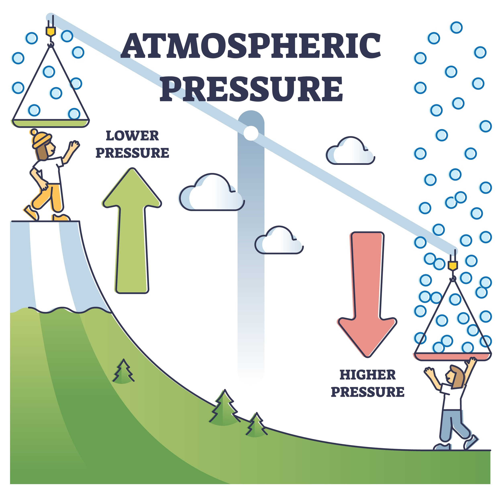

Understanding Atmospheric Pressure and Density

Figure 1: Visual representation of the atmospheric process.
Air Pressure
Air pressure is the force exerted by the weight of the air molecules above you. As you move higher up-like climbing a mountain or flying in a plane-there is less air above you. Because there is less weight pushing down, the air pressure decreases.
Air Density
Air density refers to how “crowded” the air molecules are in a specific space. The air at the bottom of the atmosphere has the weight of all the air above it pressing down, the molecules get squished together. This makes the air very dense near the surface. At higher altitudes, there is less pressure to squish the molecules together so they spread out. This is why people say the air is “thin” at the top of Mount Everest; there are fewer molecules of oxygen in every breath you take.
Why does this matter?
Differences in air pressure are what create wind. Air naturally wants to move from areas of high pressure to areas of low pressure to find a balance. Falling air pressure often signals that a storm system is moving in, while rising pressure usually brings clear, sunny skies.